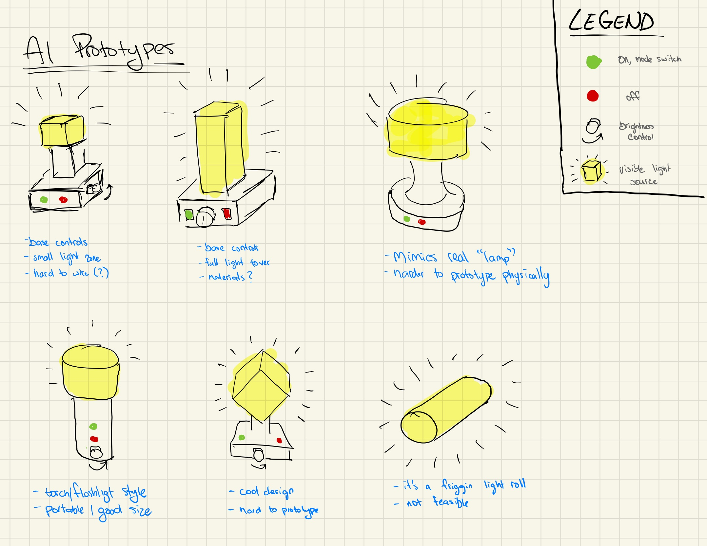
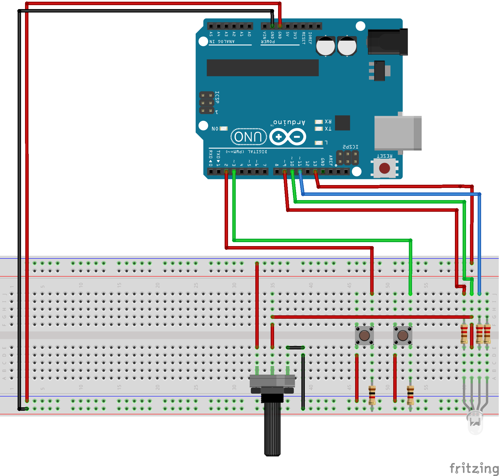
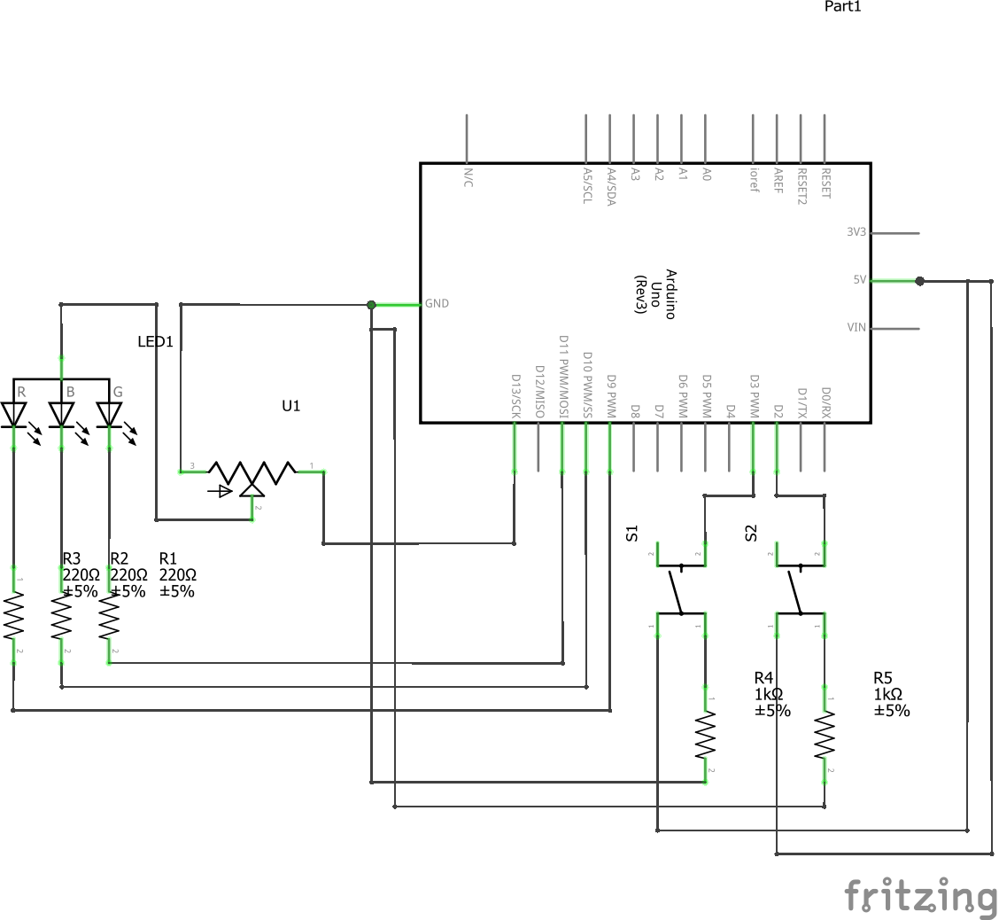

Torchy
Meet Torchy, the RGB Torch!
Visuals
Prototype Sketches
Video Demonstration
Arduino Code
const int offPin = 2;
const int onPin = 3;
const int redPin = 9;
const int greenPin = 10;
const int bluePin = 11;
const int ledPin = 13;
int onButtonState = 0;
int offButtonState = 0;
int onButtonPushCounter = 0;
int offButtonPushCounter = 0;
int onLastButtonState = 0;
int offLastButtonState = 0;
void setup() {
pinMode(redPin, OUTPUT);
pinMode(greenPin, OUTPUT);
pinMode(bluePin, OUTPUT);
pinMode(ledPin, OUTPUT);
pinMode(onPin, INPUT);
pinMode(offPin, INPUT);
}
void loop() {
onButtonState = digitalRead(onPin);
offButtonState = digitalRead(offPin);
// Read and Control Green Button
if (onButtonState != onLastButtonState) {
if (onButtonState == HIGH) {
onButtonPushCounter++;
}
delay(50);
}
onLastButtonState = onButtonState;
if (onButtonPushCounter == 1) {
digitalWrite(ledPin, HIGH);
setColour(0, 255, 255);
delay(50);
} else if (onButtonPushCounter == 2) {
setColour(255, 0, 255);
delay(50);
} else if (onButtonPushCounter == 3) {
setColour(255, 255, 0);
delay(50);
} else if (onButtonPushCounter >= 4) {
colourLoop();
}
// Read and Control Red Button
if (offButtonState != offLastButtonState) {
if (offButtonState == HIGH) {
offButtonPushCounter++;
}
delay(50);
}
offLastButtonState = offButtonState;
if (offButtonPushCounter == 1 && onButtonPushCounter != 0) {
digitalWrite(ledPin, LOW);
onButtonPushCounter = 0;
offButtonPushCounter = 0;
}
}
void colourLoop() {
setColour(107, 255, 44); // purple
delay(90);
setColour(180, 255, 125); // dark purple
delay(90);
setColour(255, 255, 0); // blue
delay(90);
setColour(255,0,255); // green
delay(90);
setColour(0,0,255); // yellow
delay(90);
setColour(30,128,255); // orange
delay(90);
setColour(0,255,255); //red
delay(90);
setColour(30,128,255); // orange
delay(90);
setColour(0,0,255); // yellow
delay(90);
setColour(255,0,255); // green
delay(90);
setColour(255, 255, 0); // blue
delay(90);
setColour(180, 255, 125); // dark purple
delay(90);
}
// RGB values are inverted because it is a anode RGB led
void setColour(int red, int green, int blue)
{
analogWrite(redPin, red);
analogWrite(greenPin, green);
analogWrite(bluePin, blue);
}
Breadboard & Circuit Schematic
 Reference Materials
http://educ8s.tv/arduino-rgb-led-tutorial/
https://www.arduino.cc/en/tutorial/button
https://www.arduino.cc/en/Tutorial/StateChangeDetection